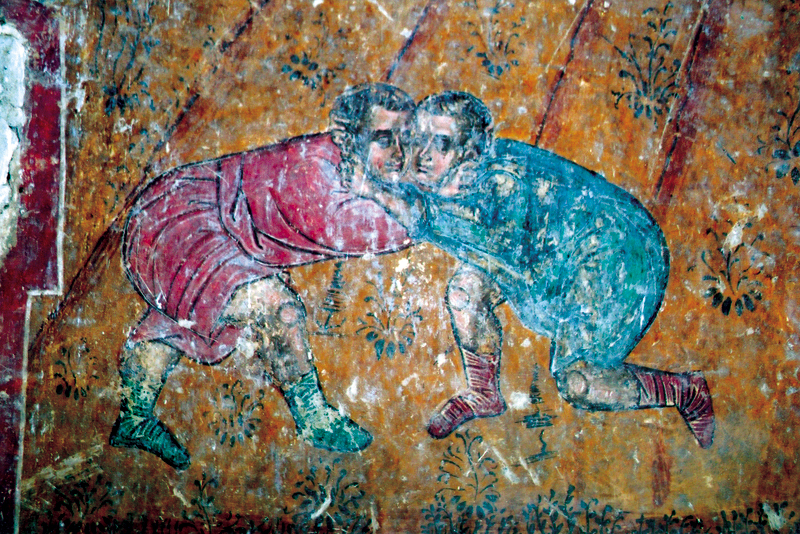

მოკლე მიმოხილვა
ანტიკური ოლიმპიური თამაშები გაიმართა ძველი საბერძნეთის ქალაქ ოლიმპიაში. პირველი თამაშები გაიმართა 776 წელს ძვ. წ. და თითოეული ოთხი წლის განმავლობაში იმართებოდა.
ოლიმპიური თამაშების ისტორია
პირველი ოლიმპიური თამაშები ტარდებოდა 776 წელს ძვ. წ., ხოლო ბოლო თამაშები 393 წელს ძვ. წ. გაიმართა. მათ მიაღწიეს დიდ მნიშვნელობას და იყვნენ გაერთიანებული საბერძნეთის ტრადიციით.
- 776 წელი ძვ. წ. - პირველი ოლიმპიური თამაშები
- 393 წელი ძვ. წ. - თამაშების გაუქმება რომის იმპერატორ თეოდოსის მიერ
სპორტები
ანტიკურ ოლიმპიურ თამაშებში რამდენიმე სპორტი არსებობდა, რომელიც განიხილებოდა როგორც ყველაზე პოპულარული:
- სირბილი: ყველაზე პოპულარული სახეობა, რომელიც მოიცავდა 192 მეტრიან დისტანციას
- პანკრატიონი: ბრტყელი ბრძოლა, რომელიც გულისხმობდა კრივსა და ჭიდაობას
- ჭიდაობა: სპორტი, რომელიც მოიცავდა ძველი საბერძნეთის კონკრეტულ სტილს
- ცხენოსნობა: ცხენზე მართვა სპორტული შეჯიბრი
სპორტსმენები
სპორტსმენები, რომლებიც მონაწილეობდნენ ოლიმპიურ თამაშებში, იყვნენ ყველა დროის საუკეთესო ადამიანები, რომლებიც დიდი პოპულარობით სარგებლობდნენ.

ოლიმპიური თამაშების მემკვიდრეობა
ოლიმპიური თამაშები გაგრძელდა სხვა კულტურებში, განსაკუთრებით თანამედროვე თამაშებში. მისი გავლენა დღემდე არის محسوسი მსოფლიოს სხვადასხვა კუთხეში.
ოლიმპიური თამაშების გაუქმება
ქრისტიანობის გავრცელების შემდეგ, რომის იმპერატორმა თეოდოსი I გაუქმა ოლიმპიური თამაშები 393 წელს ძვ. წ.